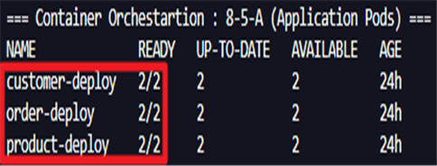

채점 유의사항
※ 다음 사항을 유의하여 채점하시오.
- AWS의 지역은 us-east-1을 사용합니다.
- 웹페이지 접근은 크롬이나 파이어폭스를 이용합니다.
- 웹페이지에서 언어에 따라 문구가 다르게 보일 수 있습니다.
- shell에서의 명령어의 출력은 버전에 따라 조금 다를 수 있습니다.
- 문제지와 채점지에 있는 <> 는 변수입니다. 해당 부분을 변경해 입력합니다.
- 채점은 문항 순서대로 진행해야 합니다.
- 삭제된 채점자료는 되돌릴 수 없음으로 유의하여 진행하며, 이의신청까지 완료 이후 선수가 생성한 클라우드 리소스를 삭제합니다.
- 부분 점수가 있는 문항은 채점 항목에 부분 점수가 적혀져 있습니다.
- 부분 점수가 따로 없는 문항은 모두 맞아야 점수로 인정됩니다.
- 리소스의 정보를 읽어오는 채점항목은 기본적으로 스크립트 결과를 통해 채점을 진행하며, 만약 선수가 이의가 있다면 명령어를 직접 입력하여 확인해볼 수 있습니다.
- (예상 출력)은 바로 이전 (명령어 입력)의 예상 출력을 의미합니다.
- 채점 시에는 별도로 제공한 채점 스크립트(wsc.sh)를 실행하여 채점할 수 있습니다. 다만, 선수가 직접 입력을 원할 경우 채점기준표에 명시된 명령어 그대로 입력하여 채점할 수 있습니다. 채점 스크립트는 root 경로에 지정하도록 합니다.
- 배포된 채점 스크립트(wsc.sh) 는 ec2-user에 최상위 경로에 위치 하도록 합니다.
- 모든 채점 사항은 wsc2024-bastion-ec2에서 ssh 접속 후 진행합니다.
배점 요약
주요항목별 배점
| 번호 | 항목 | 배점 | 채점방법 | 채점시기 |
|---|---|---|---|---|
| 1 | Network Configuration | 3.85 | 합의 | 경기 종료후 |
| 2 | Transit Between VPC | 0.35 | 합의 | 경기 종료후 |
| 3 | Bastion Server | 0.70 | 합의 | 경기 종료후 |
| 4 | Application Access Control | 3.15 | 합의 | 경기 종료후 |
| 5 | RDBMS | 0.70 | 합의 | 경기 종료후 |
| 6 | NoSQL | 0.35 | 합의 | 경기 종료후 |
| 7 | Container Registry | 0.35 | 합의 | 경기 종료후 |
| 8 | Container Orchestartion | 1.75 | 합의 | 경기 종료후 |
| 9 | Load Balancer | 1.40 | 합의 | 경기 종료후 |
| 10 | Static Page | 1.05 | 합의 | 경기 종료후 |
| 11 | CDN | 7.35 | 합의 | 경기 종료후 |
| 12 | DNS Security | 3.0 | 합의 | 경기 종료후 |
| 13 | CDN Security | 3.0 | 합의 | 경기 종료후 |
| 14 | K8S Security | 3.0 | 합의 | 경기 종료후 |
| 합계 | 30 |
세부항목별 배점
| 번호 | 주요항목 | 세부항목(채점방법) | 배점 |
|---|---|---|---|
| 1-1 | Network Configuration | VPC | 0.35 |
| 1-2 | Network Configuration | Subnet | 0.35 |
| 1-3 | Network Configuration | Routing Table | 0.35 |
| 1-4 | Network Configuration | Flow Logs | 0.35 |
| 1-5 | Network Configuration | VPC Endpoint | 0.35 |
| 1-6 | Network Configuration | Endpoint Preparation Process | 1.05 |
| 1-7 | Network Configuration | Bastion Access to ECR | 1.05 |
| 2-1 | Transit Between VPC | Transit Gateway Configure | 0.35 |
| 3-1 | Bastion Server | Bastion Configure | 0.35 |
| 3-2 | Bastion Server | Bastion Security | 0.35 |
| 4-1 | Application Access Control | VPC Lattice Configure | 1.05 |
| 4-2 | Application Access Control | Healthcheck | 1.05 |
| 4-3 | Application Access Control | Healthcheck Access | 1.05 |
| 5-1 | RDBMS | RDS Configure | 0.35 |
| 5-2 | RDBMS | DB RollBack | 0.35 |
| 6-1 | NoSQL | Table Configure | 0.35 |
| 7-1 | Container Registry | ECR Configure | 0.35 |
| 8-1 | Container Orchestartion | EKS Configure | 0.35 |
| 8-2 | Container Orchestartion | EKS KMS Encryption | 0.35 |
| 8-3 | Container Orchestartion | DB Application Node Configure | 0.35 |
| 8-4 | Container Orchestartion | Other Application Node Configure | 0.35 |
| 8-5 | Container Orchestartion | Application Pods | 0.35 |
| 9-1 | Ingress | ALB Configure | 0.35 |
| 9-2 | Ingress | Customer API Test | 0.35 |
| 9-3 | Ingress | Order API Test | 0.35 |
| 9-4 | Ingress | Order API Test | 0.35 |
| 10-1 | Static Page | S3 Bucket Configure | 0.35 |
| 10-2 | Static Page | S3 Objects | 0.35 |
| 10-3 | Static Page | S3 Access | 0.35 |
| 11-1 | CDN | CloudFront Configure | 1.05 |
| 11-2 | CDN | Redirect HTTPS | 1.05 |
| 11-3 | CDN | Static Page Test | 1.05 |
| 11-4 | CDN | S3 Caching | 1.05 |
| 11-5 | CDN | Customer API Test | 1.05 |
| 11-6 | CDN | Product API Test | 1.05 |
| 11-7 | CDN | Order API Test | 1.05 |
| 12-1 | DNS Security | Public 생성 | 0.5 |
| 12-2 | DNS Security | 외부 접근 | 1.0 |
| 12-3 | DNS Security | 내부 접근 | 1.5 |
| 13-1 | CDN Security | DNS Lookup | 0.5 |
| 13-2 | CDN Security | AWS Certificate Management | 1.5 |
| 13-3 | CDN Security | curl https | 1.0 |
| 14-1 | K8S Security | latest tag | 1.5 |
| 14-2 | K8S Security | prod label 배포 | 0.75 |
| 14-3 | K8S Security | beta label 배포 | 0.75 |
| 총점 | 30 |
채점 항목
0. 사전준비
- wsc2024-bastion-ec2 서버에 SSH를 통해 접근합니다.
- rm –rf ~/.aws를 진행합니다.
- aws configure를 입력하고 default.region을 us-east-1으로 설정합니다.
위의 작업이 완료되면 “사전준비 완료! 채점 시작!” 이라는 문구가 출력됩니다.
1-1. VPC · 0.35점
1-1-A 채점 방법 (명령어 입력)
aws ec2 describe-vpcs --filter Name=tag:Name,Values=wsc2024-ma-vpc --query "Vpcs[0].CidrBlock" \
; aws ec2 describe-vpcs --filter Name=tag:Name,Values=wsc2024-prod-vpc --query "Vpcs[0].CidrBlock" \
; aws ec2 describe-vpcs --filter Name=tag:Name,Values=wsc2024-storage-vpc --query "Vpcs[0].CidrBlock"
1-1-A 기대 결과 (예상 출력) — 정확히 일치, 순서 중요
"10.0.0.0/16"
"172.16.0.0/16"
"192.168.0.0/16"
1-2. Subnet · 0.35점
1-2-A 채점 방법 (명령어 입력)
aws ec2 describe-subnets --filter Name=tag:Name,Values=wsc2024-ma-mgmt-sn-a --query "Subnets[0].CidrBlock" \
; aws ec2 describe-subnets --filter Name=tag:Name,Values=wsc2024-ma-mgmt-sn-b --query "Subnets[0].CidrBlock" \
; aws ec2 describe-subnets --filter Name=tag:Name,Values=wsc2024-prod-load-sn-a --query "Subnets[0].CidrBlock" \
; aws ec2 describe-subnets --filter Name=tag:Name,Values=wsc2024-prod-load-sn-b --query "Subnets[0].CidrBlock" \
; aws ec2 describe-subnets --filter Name=tag:Name,Values=wsc2024-prod-app-sn-a --query "Subnets[0].CidrBlock" \
; aws ec2 describe-subnets --filter Name=tag:Name,Values=wsc2024-prod-app-sn-b --query "Subnets[0].CidrBlock" \
; aws ec2 describe-subnets --filter Name=tag:Name,Values=wsc2024-storage-db-sn-a --query "Subnets[0].CidrBlock" \
; aws ec2 describe-subnets --filter Name=tag:Name,Values=wsc2024-storage-db-sn-b --query "Subnets[0].CidrBlock"
1-2-A 기대 결과 (예상 출력) — 정확히 일치, 순서 중요
"10.0.0.0/24"
"10.0.1.0/24"
"172.16.0.0/24"
"172.16.1.0/24"
"172.16.2.0/24"
"172.16.3.0/24"
"192.168.0.0/24"
"192.168.1.0/24"
1-3. Routing Table · 0.35점
1-3-A 채점 방법 (명령어 입력)
aws ec2 describe-route-tables --filters "Name=tag:Name,Values=wsc2024-ma-mgmt-rt" --query "RouteTables[].Routes[?GatewayId != null && starts_with(GatewayId, 'igw')].GatewayId" --output text \
; aws ec2 describe-route-tables --filters "Name=tag:Name,Values=wsc2024-prod-load-rt" --query "RouteTables[].Routes[?GatewayId != null && starts_with(GatewayId, 'igw')].GatewayId" --output text \
; aws ec2 describe-route-tables --filters "Name=tag:Name,Values=wsc2024-prod-app-rt-a" --query "RouteTables[].Routes[?NatGatewayId != null].NatGatewayId" --output text \
; aws ec2 describe-route-tables --filters "Name=tag:Name,Values=wsc2024-prod-app-rt-b" --query "RouteTables[].Routes[?NatGatewayId != null].NatGatewayId" --output text \
; aws ec2 describe-route-tables --filters "Name=tag:Name,Values=wsc2024-storage-db-rt-a" --query "RouteTables[].Associations[].SubnetId" --output text | xargs -I {} aws ec2 describe-subnets --subnet-ids {} --query "Subnets[].Tags[?Key=='Name'].Value" --output text \
; aws ec2 describe-route-tables --filters "Name=tag:Name,Values=wsc2024-storage-db-rt-b" --query "RouteTables[].Associations[].SubnetId" --output text | xargs -I {} aws ec2 describe-subnets --subnet-ids {} --query "Subnets[].Tags[?Key=='Name'].Value" --output text
1-3-A 기대 결과 (예상 출력) — 순서 중요
“igw-” 로 시작하는 문구가 출력이 되는지 확인
“igw-” 로 시작하는 문구가 출력이 되는지 확인
“nat-” 로 시작하는 문구가 출력이 되는지 확인
“nat-” 로 시작하는 문구가 출력이 되는지 확인
wsc2024-storage-db-sn-a <- 정확히 일치
wsc2024-storage-db-sn-b <- 정확히 일치
1-4. Flow Logs · 0.35점
1-4-A 채점 방법 (명령어 입력)
VPC_ID=$(aws ec2 describe-vpcs --filters "Name=tag:Name,Values=wsc2024-ma-vpc" --query "Vpcs[*].VpcId" --output text)
aws ec2 describe-flow-logs --filter "Name=resource-id,Values=$VPC_ID" --query "FlowLogs[*].FlowLogId" --output text
1-4-A 기대 결과 (예상 출력)
“fl-” 로 시작하는 문구가 출력이 되는지 확인
1-5. VPC Endpoint · 0.35점
1-5-A 채점 방법 (명령어 입력)
aws ec2 describe-vpc-endpoints --query "VpcEndpoints[].ServiceName"
1-5-A 기대 결과 (예상 출력) — ecr.dkr , s3 존재 여부 확인
[
"com.amazonaws.us-east-1.s3",
"com.amazonaws.us-east-1.ecr.dkr",
]
1-6. Endpoint Preparation Process · 1.05점
1-6-A 채점 방법 (명령어 입력)
POLICY_ARNS=$(aws iam list-attached-role-policies --role-name wsc2024-bastion-role --query "AttachedPolicies[].PolicyArn" --output text)
for POLICY_ARN in $POLICY_ARNS; do
POLICY_VERSION=$(aws iam get-policy --policy-arn $POLICY_ARN --query "Policy.DefaultVersionId" --output text)
POLICY_DOCUMENT=$(aws iam get-policy-version --policy-arn $POLICY_ARN --version-id $POLICY_VERSION --query "PolicyVersion.Document" --output json)
echo "$POLICY_DOCUMENT"
done
1-6-A 기대 결과 (예상 출력) — 정확히 일치, 이 외 JSON 출력되면 안 됨
{
"Version": "2012-10-17",
"Statement": [
{
"Effect": "Allow",
"Action": "*",
"Resource": "*"
}
]
}
1-6-B 채점 방법 (명령어 입력)
export BUCKET_NAME="tesfsdfklsqwerlksdf"
export REGION="us-east-1"
export FILE_NAME="test_upload.txt"
export DOWNLOADED_FILE_NAME="downloaded_test_upload.txt"
aws s3api create-bucket --bucket $BUCKET_NAME --region $REGION > /dev/null 2>&1
echo "This is a test file for S3 upload and download." > $FILE_NAME
aws s3 cp $FILE_NAME s3://$BUCKET_NAME/ > /dev/null 2>&1
aws s3 cp s3://$BUCKET_NAME/$FILE_NAME $DOWNLOADED_FILE_NAME
aws s3 rm s3://$BUCKET_NAME/$FILE_NAME
aws s3api delete-bucket --bucket $BUCKET_NAME --region $REGION
1-6-B 기대 결과 (예상 출력) — 정확히 일치
download: s3://tesfsdfklsqwerlksdf/test_upload.txt to ./downloaded_test_upload.txt
delete: s3://tesfsdfklsqwerlksdf/test_upload.txt
1-7. Bastion Access to ECR · 1.05점
주의1-6 오답 시 진행 X
1-7-A 채점 방법 (명령어 입력)
AWS_REGION=$(aws configure get region)
ACCOUNT_ID=$(aws sts get-caller-identity --query Account --output text)
docker rmi -f $(docker images) 2>/dev/null \
; aws ecr get-login-password --region "$AWS_REGION" | docker login --username AWS --password-stdin "$ACCOUNT_ID.dkr.ecr.$AWS_REGION.amazonaws.com" > /dev/null 2>&1 \
; docker pull $ACCOUNT_ID.dkr.ecr.$AWS_REGION.amazonaws.com/customer-repo:latest
1-7-A 기대 결과 (예상 출력) — (1-6 오답 시 진행 X) AccessDenied 출력 확인
error pulling image configuration: download failed after attempts=1: denied: <?xml version="1.0" encoding="UTF-8"?>
<Error><Code>AccessDenied</Code><Message>Access Denied</Message><RequestId>D266MTTR9A8Y6XAQ</RequestId><HostId>oNGQmQ4OWAyNe/nB9X2st34y5tQWJlLL/9mpwK56unHhOR2izzuNUByqiNlL10Jtw3vpMJg+vdQ=</HostId></Error>
2-1. Transit Gateway Configure · 0.35점
2-1-A 채점 방법 (명령어 입력)
TGWS=$(aws ec2 describe-transit-gateways --query "TransitGateways[*].{Name:Tags[?Key=='Name'].Value|[0]}" --output json)
TGW_NAMES=$(echo $TGWS | jq -r '.[].Name')
for TGW_NAME in $TGW_NAMES; do
echo "$TGW_NAME"
TGW_ID=$(aws ec2 describe-transit-gateways --filters "Name=tag:Name,Values=$TGW_NAME" --query "TransitGateways[0].TransitGatewayId" --output text)
ATTACHMENTS=$(aws ec2 describe-transit-gateway-attachments --filters "Name=transit-gateway-id,Values=$TGW_ID" --query "TransitGatewayAttachments[*].{Name:Tags[?Key=='Name'].Value|[0]}" --output json)
ATTACHMENT_NAMES=$(echo $ATTACHMENTS | jq -r '.[].Name')
for ATTACHMENT_NAME in $ATTACHMENT_NAMES; do
echo "$ATTACHMENT_NAME"
done
ROUTE_TABLES=$(aws ec2 describe-transit-gateway-route-tables --filters "Name=transit-gateway-id,Values=$TGW_ID" --query "TransitGatewayRouteTables[*].{Name:Tags[?Key=='Name'].Value|[0]}" --output json)
ROUTE_TABLE_NAMES=$(echo $ROUTE_TABLES | jq -r '.[].Name')
for ROUTE_TABLE_NAME in $ROUTE_TABLE_NAMES; do
echo "$ROUTE_TABLE_NAME"
done
done
2-1-A 기대 결과 (예상 출력) — 정확히 일치, 순서 상관 없음
wsc2024-vpc-tgw
wsc2024-ma-tgw-attach
wsc2024-prod-tgw-attach
wsc2024-storage-tgw-attach
wsc2024-ma-tgw-rt
wsc2024-prod-tgw-rt
wsc2024-storage-tgw-rt
3-1. Bastion Configure · 0.35점
3-1-A 채점 방법 (명령어 입력)
INSTANCE_NAME_TAG="wsc2024-bastion-ec2"
INSTANCE_ID=$(aws ec2 describe-instances --filters "Name=tag:Name,Values=$INSTANCE_NAME_TAG" --query "Reservations[0].Instances[0].InstanceId" --output text)
AMI_ID=$(aws ec2 describe-instances --instance-ids "$INSTANCE_ID" --query "Reservations[0].Instances[0].ImageId" --output text)
AMI_DESCRIPTION=$(aws ec2 describe-images --image-ids "$AMI_ID" --query "Images[0].Description" --output text)
INSTANCE_TYPE=$(aws ec2 describe-instances --instance-ids "$INSTANCE_ID" --query "Reservations[0].Instances[0].InstanceType" --output text)
echo "$AMI_DESCRIPTION"
echo "$INSTANCE_TYPE"
3-1-A 기대 결과 (예상 출력)
“Amazon Linux 2023 AMI” 로 시작하는 문구가 출력이 되는지 확인
t3.small <- 정확히 일치
3-2. Bastion Security · 0.35점
3-2-A 채점 방법 (명령어 입력)
aws ec2 describe-security-groups --filter Name=group-name,Values=wsc2024-bastion-sg --query "SecurityGroups[0].IpPermissions[].{FromPort:FromPort,ToPort:ToPort,IpRanges:IpRanges}"
3-2-A 기대 결과 (예상 출력) — 정확히 일치
[
{
"FromPort": 28282,
"ToPort": 28282,
"IpRanges": [
{
"CidrIp": “0.0.0.0/0" <- 단일 IP만 허용할 수도 있음
}
]
}
]
3-2-B 채점 방법 (명령어 입력)
INSTANCE_NAME_TAG="wsc2024-bastion-ec2"
INSTANCE_DESC=$(aws ec2 describe-instances --filters "Name=tag:Name,Values=$INSTANCE_NAME_TAG" --query "Reservations[0].Instances[0]" --output json)
IAM_INSTANCE_PROFILE_ARN=$(echo $INSTANCE_DESC | jq -r '.IamInstanceProfile.Arn')
ROLE_NAME=$(aws iam get-instance-profile --instance-profile-name $(echo $IAM_INSTANCE_PROFILE_ARN | awk -F'/' '{print $NF}') --query "InstanceProfile.Roles[0].RoleName" --output text)
ROLE_POLICIES=$(aws iam list-attached-role-policies --role-name "$ROLE_NAME" --query "AttachedPolicies[].PolicyName" --output text)
echo "$ROLE_POLICIES"
3-2-B 기대 결과 (예상 출력) — 정확히 일치
AdministratorAccess
4-1. VPC Lattice Configure · 1.05점
4-1-A 채점 방법 (명령어 입력)
aws vpc-lattice list-service-networks --query "items[?name=='wsc2024-lattice-svc-net'].name" --output text
SERVICE_NETWORK_ID=$(aws vpc-lattice list-service-networks --query "items[?name=='wsc2024-lattice-svc-net'].id" --output text)
SVC_ASSOCIATION=$(aws vpc-lattice list-service-network-service-associations --service-network-identifier "$SERVICE_NETWORK_ID" --query items[*].id --output text)
VPC_ASSOCIATION=$(aws vpc-lattice list-service-network-vpc-associations --service-network-identifier "$SERVICE_NETWORK_ID" --query 'items[*].id' --output text)
echo "$SVC_ASSOCIATION"
echo "$VPC_ASSOCIATION"
4-1-A 기대 결과 (예상 출력) — 순서 상관 있음
wsc2024-lattice-svc-net <- 정확히 일치
“snsa-” 로 시작하는 문구가 출력이 되는지 확인
“snva-” 로 시작하는 문구가 출력이 되는지 확인
4-2. Healthcheck · 1.05점
4-2-A 채점 방법 (명령어 입력)
TARGET_GROUP_ID=$(aws vpc-lattice list-target-groups --target-group-type IP | jq -r '.items[].id')
aws vpc-lattice list-targets --target-group-identifier "$TARGET_GROUP_ID"
4-2-A 기대 결과 (예상 출력) — status가 HEALTH인지 확인 , 복수 가능
{
"items": [
{
"id": "172.16.3.145",
"port": 8080,
"status": "HEALTHY"
}
]
}
4-3. Healthcheck Access · 1.05점
4-3-A 채점 방법 (명령어 입력)
SERVICE_NETWORK_ID=$(aws vpc-lattice list-service-networks --query "items[?name=='wsc2024-lattice-svc-net'].id" --output text)
aws vpc-lattice list-service-network-service-associations --service-network-identifier "$SERVICE_NETWORK_ID" --query items[*].id --output text
4-3-A 기대 결과 (예상 출력)
“snsa-” 로 시작하는 문구 복사
4-3-B 채점 방법 (콘솔 접근)

-
wsc2024-lattice-svc-net 이라는 name을 가진 Service networks에 접속
-
4-3-A에서 복사한 ID에

Service associations 탭에서 Association ID 선택 접속
-
Domain Name을 복사

Domain name 복사 버튼 -
curl http://<4-3-B-3 항목에서 복사한 Domain>/healthcheck
4-3-B 기대 결과 (예상 출력) — 정확히 일치
{"status":"ok."}
5-1. RDS Configure · 0.35점
5-1-A 채점 방법 (명령어 입력)
aws rds describe-db-clusters --db-cluster-identifier wsc2024-db-cluster --query 'DBClusters[0].EngineVersion' --output text \
; aws rds describe-db-clusters --db-cluster-identifier wsc2024-db-cluster --query 'DBClusters[0].MasterUsername' --output text \
; aws rds describe-db-instances --query "DBInstances[?DBClusterIdentifier=='wsc2024-db-cluster'].DBInstanceClass" --output text \
5-1-A 기대 결과 (예상 출력)
“8.0.mysql_aurora” 로 시작하는 문구가 출력이 되는지 확인
admin <- 정확히 일치
db.t3.medium db.t3.medium <- 정확히 일치
5-2. DB RollBack · 0.35점
5-2-A 채점 방법 (명령어 입력)
aws rds describe-db-clusters --db-cluster-identifier wsc2024-db-cluster --query "DBClusters[0].BacktrackWindow" --output text
5-2-A 기대 결과 (예상 출력) — 정확히 일치
14400
6-1. Table Configure · 0.35점
6-1-A 채점 방법 (명령어 입력)
aws dynamodb describe-table --table-name order --query 'Table.KeySchema[?KeyType == `HASH`].AttributeName' --output text
6-1-A 기대 결과 (예상 출력) — 정확히 일치
id
7-1. ECR Configure · 0.35점
7-1-A 채점 방법 (명령어 입력)
aws ecr describe-repositories --query 'repositories[*].repositoryName' --output text
7-1-A 기대 결과 (예상 출력) — 정확히 일치
customer-repo product-repo order-repo
8-1. EKS Configure · 0.35점
8-1-A 채점 방법 (명령어 입력)
aws eks describe-cluster --name wsc2024-eks-cluster --query 'cluster.version' --output text \
; aws eks describe-cluster --name wsc2024-eks-cluster --query 'cluster.logging.clusterLogging[].types' | jq . --output text
8-1-A 기대 결과 (예상 출력) — 정확히 일치
1.29
[
[
"api",
"audit",
"authenticator",
"controllerManager",
"scheduler"
]
]
8-2. EKS KMS Encryption · 0.35점
8-2-A 채점 방법 (명령어 입력)
aws eks describe-cluster --name wsc2024-eks-cluster --query "cluster.encryptionConfig[].provider.keyArn" --output text
8-2-A 기대 결과 (예상 출력)
“arn:aws:kms:us-east-1” 로 시작하는 문구가 출력이 되는지 확인
8-3. DB Application Node Configure · 0.35점
8-3-A 채점 방법 (명령어 입력)
kubectl get node -l app=db -o json | jq -r '.items[].metadata.labels."eks.amazonaws.com/nodegroup"'
kubectl get nodes -l app=db -o json | jq -r '.items[].metadata.name'
kubectl get nodes -l app=db -o json | jq -r '.items[] | .metadata.labels["beta.kubernetes.io/instance-type"]'
8-3-A 기대 결과 (예상 출력) — 정확히 일치 , 복수로 출력되야 정답
wsc2024-db-application-ng
wsc2024-db-application-ng
“ip-“ 로 시작하는 문구가 출력이 되는지 확인
”ip-” 로 시작하는 문구가 출력이 되는지 확인
t3.medium
t3.medium
8-4. Other Application Node Configure · 0.35점
8-4-A 채점 방법 (명령어 입력)
kubectl get node -l app=other -o json | jq -r '.items[].metadata.labels."eks.amazonaws.com/nodegroup"'
kubectl get nodes -l app=other -o json | jq -r '.items[].metadata.name'
kubectl get nodes -l app=other -o json | jq -r '.items[] | .metadata.labels["beta.kubernetes.io/instance-type"]'
8-4-A 기대 결과 (예상 출력)
wsc2024-other-ng
wsc2024-other-ng
“ip-“ 로 시작하는 문구가 출력이 되는지 확인
”ip-” 로 시작하는 문구가 출력이 되는지 확인
t3.medium
t3.medium
8-5. Application Pods · 0.35점
8-5-A 채점 방법 (명령어 입력)
kubectl get deploy -n wsc2024
8-5-A 기대 결과 (예상 출력) — 정확히 일치

9-1. ALB Configure · 0.35점
9-1-A 채점 방법 (명령어 입력)
aws elbv2 describe-load-balancers --names wsc2024-alb --query "LoadBalancers[].Scheme" --output text
aws elbv2 describe-load-balancers --names wsc2024-alb --query "LoadBalancers[].Type" --output text
9-1-A 기대 결과 (예상 출력) — 정확히 일치
internet-facing
application
9-2. Customer API Test · 0.35점
9-2-A 채점 방법 (명령어 입력) — 실패 시 id 변경 후 최대 3번 재시도 가능
LBDNS=$(aws elbv2 describe-load-balancers --names wsc2024-alb --query "LoadBalancers[].DNSName" --output text)
curl http://$LBDNS/v1/customer -X POST -H 'Content-Type: application/json' -d '{"id": "3101", "name": "Lee", "gender": "18"}'
echo "-"
9-2-A 기대 결과 (예상 출력) — 정확히 일치
{"customer":{"id":"3101","name":"Lee","gender":"18"},"message":"The customer is created."}
9-3. Order API Test · 0.35점
9-3-A 채점 방법 (명령어 입력)
LBDNS=$(aws elbv2 describe-load-balancers --names wsc2024-alb --query "LoadBalancers[].DNSName" --output text)
curl http://$LBDNS/v1/product -X POST -H 'Content-Type: application/json' -d '{"id": "3201", "name": "kim", "category": "stduent"}'
echo "-"
9-3-A 기대 결과 (예상 출력) — 정확히 일치
{"product":{"id":"3201","name":"kim","category":"stduent"},"message":"The product is created."}
9-4. Order API Test · 0.35점
9-4-A 채점 방법 (명령어 입력)
LBDNS=$(aws elbv2 describe-load-balancers --names wsc2024-alb --query "LoadBalancers[].DNSName" --output text)
curl http://$LBDNS/v1/order -X POST -H 'Content-Type: application/json' -d '{"id": "3301", "customerid": "3101", "productid": "3201"}'
echo "-"
9-4-A 기대 결과 (예상 출력) — 정확히 일치
{"order":{"id":"3301","customerid":"3101","productid":"3201"},"message":"The order is created."}
10-1. S3 Bucket Configure · 0.35점
10-1-A 채점 방법 (명령어 입력)
aws s3 ls
10-1-A 기대 결과 (예상 출력)
2024-05-29 01:45:49 wsc2024-s3-static-zfff
- wsc2024-s3-static-<4자리 영문> 이 출력되는지 확인
10-2. S3 Objects · 0.35점
10-2-A 채점 방법 (명령어 입력)
for bucket in $(aws s3api list-buckets --query "Buckets[?starts_with(Name, 'wsc2024-s3-static')].Name" --output text); do
aws s3 ls "s3://$bucket" --recursive
done
10-2-A 기대 결과 (예상 출력)
2024-05-30 02:19:44 10004 index.html
- index.html 만 출력되는지 확인
10-3. S3 Access · 0.35점
10-3-A 채점 방법 (명령어 입력)
BUCKET_NAME=$(aws s3api list-buckets --query "Buckets[?starts_with(Name, 'wsc2024-s3-static')].Name" --output text)
curl https://s3.us-east-1.amazonaws.com/$BUCKET_NAME/index.html
10-3-A 기대 결과 (예상 출력) — AccessDenied 출력 확인
<?xml version="1.0" encoding="UTF-8"?>
<Error><Code>AccessDenied</Code><Message>Access Denied</Message><RequestId>61ZYXR7KRGYYQV0F</RequestId><HostId>1DVS1AnW17Q1FBRzgyk37tJ36ONhVMkjn8M4A+mTm02SW2krmxIZ2uVIs5A25rYCTmsR8OG+A+I=</HostId></Error>
11-1. CloudFront Configure · 1.05점
11-1-A 채점 방법 (명령어 입력)
aws cloudfront list-distributions --query "DistributionList.Items[].Origins.Items[].DomainName" --output text
aws cloudfront list-distributions --query "DistributionList.Items[].IsIPV6Enabled" --output text
ID=$(aws cloudfront list-distributions --query "DistributionList.Items[].Id" --output text)
aws cloudfront get-distribution-config --id $ID --query 'DistributionConfig.PriceClass' --output text
11-1-A 기대 결과 (예상 출력)
“wsc2024-s3-static-” 로 시작하는 문구가 출력이 되는지 확인
“wsc2024-alb-” 로 시작하는 문구가 출력이 되는지 확인
False <- 정확히 일치
PriceClass_All <- 정확히 일치
11-2. Redirect HTTPS · 1.05점
11-2-A 채점 방법 (명령어 입력)
aws cloudfront list-distributions --query "DistributionList.Items[].DefaultCacheBehavior.ViewerProtocolPolicy" --output text
aws cloudfront list-distributions --query "DistributionList.Items[].CacheBehaviors.Items[].ViewerProtocolPolicy" --output text
11-2-A 기대 결과 (예상 출력) — 정확히 일치
redirect-to-https
redirect-to-https
11-3. Static Page Test · 1.05점
11-3-A 채점 방법 (명령어 입력)
DOMAIN=$(aws cloudfront list-distributions --query "DistributionList.Items[].DomainName" --output text)
curl https://$DOMAIN 2>/dev/null | grep -oP '(?<=<h1>).*?(?=</h1>)'
11-3-A 기대 결과 (예상 출력) — 정확히 일치
Welcome to Cloud Computing
11-4. S3 Caching · 1.05점
11-4-A 채점 방법 (명령어 입력) — 한 번만 입력
DOMAIN=$(aws cloudfront list-distributions --query "DistributionList.Items[].DomainName" --output text)
curl -s -I https://$DOMAIN | grep -i x-cache
11-4-A 기대 결과 (예상 출력) — 정확히 일치
x-cache: Hit from cloudfront
11-5. Customer API Test · 1.05점
11-5-A 채점 방법 (명령어 입력)
DOMAIN=$(aws cloudfront list-distributions --query "DistributionList.Items[].DomainName" --output text)
curl https://$DOMAIN/v1/customer?id=3101
echo "-"
11-5-A 기대 결과 (예상 출력) — 정확히 일치
{"customer":{"id":"3101","name":"Lee","gender":"18"},"message":"The customer is well in database."}-
11-6. Product API Test · 1.05점
11-6-A 채점 방법 (명령어 입력)
DOMAIN=$(aws cloudfront list-distributions --query "DistributionList.Items[].DomainName" --output text)
curl https://$DOMAIN/v1/product?id=3201
echo "-"
11-6-A 기대 결과 (예상 출력) — 정확히 일치
{"product":{"id":"3201","name":"kim","category":"stduent"},"message":"The product is well in database."}-
11-7. Order API Test · 1.05점
11-7-A 채점 방법 (명령어 입력)
DOMAIN=$(aws cloudfront list-distributions --query "DistributionList.Items[].DomainName" --output text)
curl https://$DOMAIN/v1/order?id=3301
echo "-"
11-7-A 기대 결과 (예상 출력) — 정확히 일치
{"order":{"id":"3301","customerid":"3101","productid":"3201"},"message":"The order is well in database."}-
12-1. Public 생성 · 0.5점
12-1-A 채점 방법 (명령어 실행)
aws route53 list-hosted-zones --region us-east-1 | grep Name
12-1-A 설명
- <비번호>.cloudhrdk*.com으로 반환되는 이름이 있는지 확인합니다.
12-2. 외부 접근 · 1.0점
12-2-A 설명
- 선수의 Windows PC 등 외부 환경에서 아래 명령어 입력 시 54.0.0.10이 반환 되는지 확인합니다.
12-2-A 채점 방법 (명령어 실행)
nslookup q1.${HOSTZONE}
12-3. 내부 접근 · 1.5점
12-3-A 설명
- Bastion에 접근합니다.
- 아래 명령어를 입력하여 cloudhrdk 관련 도메인이 없는 것을 확인합니다.
12-3-A 채점 방법 (명령어 실행)
cat /etc/hosts
12-3-B 설명 3. 아래 명령어를 입력하여 Private hosted zone이 없는 것을 확인합니다.
12-3-B 채점 방법 (명령어 실행)
aws route53 list-hosted-zones --region us-east-1 --hosted-zone-type PrivateHostedZone
12-3-C 설명
- 아래 명령어를 입력하여 172.16.0.10이 반환 되는지 확인합니다.
- 총 4번 반복하고 4번 전부 172.16.0.10이 반환되어야 합니다.
12-3-C 채점 방법 (명령어 실행)
nslookup q1.${hostzone}
13-1. DNS Lookup · 0.5점
13-1-A 설명
- 아래 명령어를 입력하여 cloudfront.net을 포함하는 주소가 반환 되는지 확인합니다.
13-1-A 채점 방법 (명령어 실행)
nslookup cf.${hostzone}
13-2. AWS Certificate Management · 1.5점
13-2-A 설명
- 아래 명령어를 입력하여 Amazon 혹은 AWS 포함 문자열이 반환 되는지 확인합니다.
13-2-A 채점 방법 (명령어 실행)
echo -n "Q" | openssl s_client -connect cf.${hostzone}:443 2> /dev/null | grep i:
13-3. curl https · 1.0점
13-3-A 설명
- 아래 명령어를 입력하여 “Cloud Skills <비번호>” 문자열이 반환 되는지 확인 합니다.
13-3-A 채점 방법 (명령어 실행)
curl https://cf.${hostzone}
14-1. latest tag · 1.5점
14-1-A 설명
- 아래 명령어를 입력하여 beta 네임스페이스에 Pod를 생성합니다.
14-1-A 채점 방법 (명령어 실행)
aws eks update-kubeconfig --region us-east-1 --name prod-<등번호>
kubectl apply -f beta.yaml
14-1-B 설명
- 아래 명령어를 입력하여 beta 네임스페이스에 day1-beta 파드가 Running 상태로 잘 구성 되었는지 확인합니다.
14-1-B 채점 방법 (명령어 실행)
kubectl get pods -n beta
14-1-C 설명
- 아래 명령어를 입력하여 prod 네임스페이스에 Pod를 생성합니다.
14-1-C 채점 방법 (명령어 실행)
kubectl apply -f prod.yaml
14-1-D 설명
- 아래 명령어를 입력하여 prod 네임스페이스에 day1-prod 파드가 생성에 실패 하는지 확인합니다.
14-1-D 채점 방법 (명령어 실행)
kubectl get pods -n prod
14-2. prod label 배포 · 0.75점
14-2-A 설명
- 명령어를 입력하여 day1-prod-pos Pod를 생성합니다.
14-2-A 채점 방법 (명령어 실행)
kubectl apply -f prod-pos.yaml
14-2-B 설명
- 명령어를 입력하여 day1-prod-pos Pod가 생성되어 Running 상태 인지 확인 합니다.
14-2-B 채점 방법 (명령어 실행)
kubectl get pods -n prod
14-2-C 설명
- 명령어를 입력하여 day1-prod-neg Pod를 생성합니다.
14-2-C 채점 방법 (명령어 실행)
kubectl apply -f prod-neg.yaml
14-2-D 설명
- 명령어를 입력하여 day1-prod-neg Pod가 생성에 실패 하는지 확인합니다.
14-2-D 채점 방법 (명령어 실행)
kubectl get pods -n prod
14-3. beta label 배포 · 0.75점
14-3-A 설명
- 명령어를 입력하여 day1-beta-pos Pod를 생성합니다.
14-3-A 채점 방법 (명령어 실행)
kubectl apply -f beta-pos.yaml
14-3-B 설명
- 명령어를 입력하여 day1-beta-pos Pod가 생성되어 Running 상태 인지 확인 합니다.
14-3-B 채점 방법 (명령어 실행)
kubectl get pods -n beta
14-3-C 설명
- 명령어를 입력하여 day1-beta-neg Pod를 생성합니다.
14-3-C 채점 방법 (명령어 실행)
kubectl apply -f beta-neg.yaml
14-3-D 설명
- 명령어를 입력하여 day1-beta-neg Pod가 생성에 실패 하는지 확인합니다.
14-3-D 채점 방법 (명령어 실행)
kubectl get pods -n beta